О нас
Начиная свой путь, компания BRN поставила задачу создать продукт, который будет отвечать всем критериям комфорта и качества! Комфорт и здоровье каждого клиента, для нас — превыше всего!
Матрасы высочайшего качества у вас в магазине Мы - официальный поставщик турецких матрасов Brn в России, предоставляющий клиентам высококачественные продукты для комфортного и здорового сна. Наша компания имеет многолетний опыт работы на рынке и является лидером в сфере поставок матрасов из Турции в Россию. Основными принципами нашей работы являются качество, надежность и индивидуальный подход к каждому клиенту. Мы стремимся предложить нашим покупателям только лучшие решения для обеспечения здорового и комфортного сна, учитывая их индивидуальные потребности и предпочтения. Наша компания активно сотрудничает с производителями матрасов Brn в Турции, что позволяет нам обеспечивать постоянное наличие актуальной продукции и предлагать нашим клиентам самый широкий ассортимент моделей, отвечающих самым высоким стандартам качества. Мы гордимся нашей репутацией надежного партнера и стремимся к дальнейшему развитию и улучшению наших услуг. Наша цель - помочь каждому клиенту обрести качественный сон и положительные эмоции от выбора наших продуктов.
Преимущества
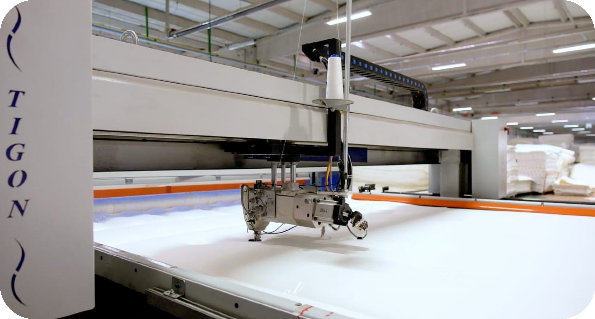-
Ткань «Tencel», «Cashmere», «Viscosa» и многие другие использующиеся в матрасах BRN, имеют множество преимуществ, а именно: хорошую вентиляцию, создавая оптимальную температуру сна, не в зависимости от времени года и прочих внешних факторов., ткани экологически чистые, гигиеничные и антиаллергенные, приятные на ощупь и весьма износостойкие!
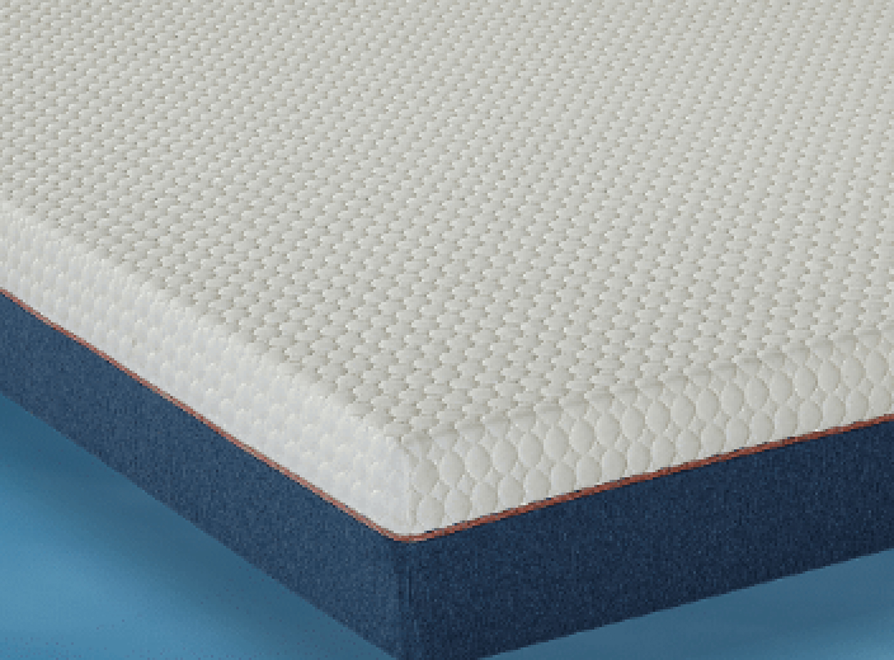 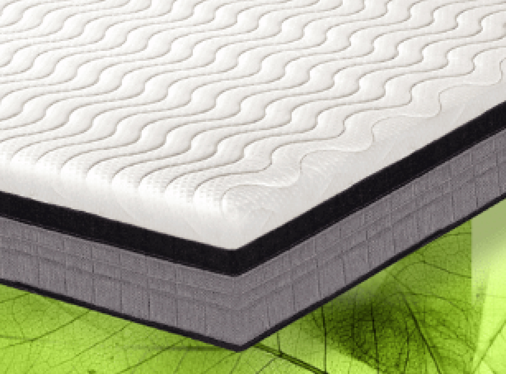 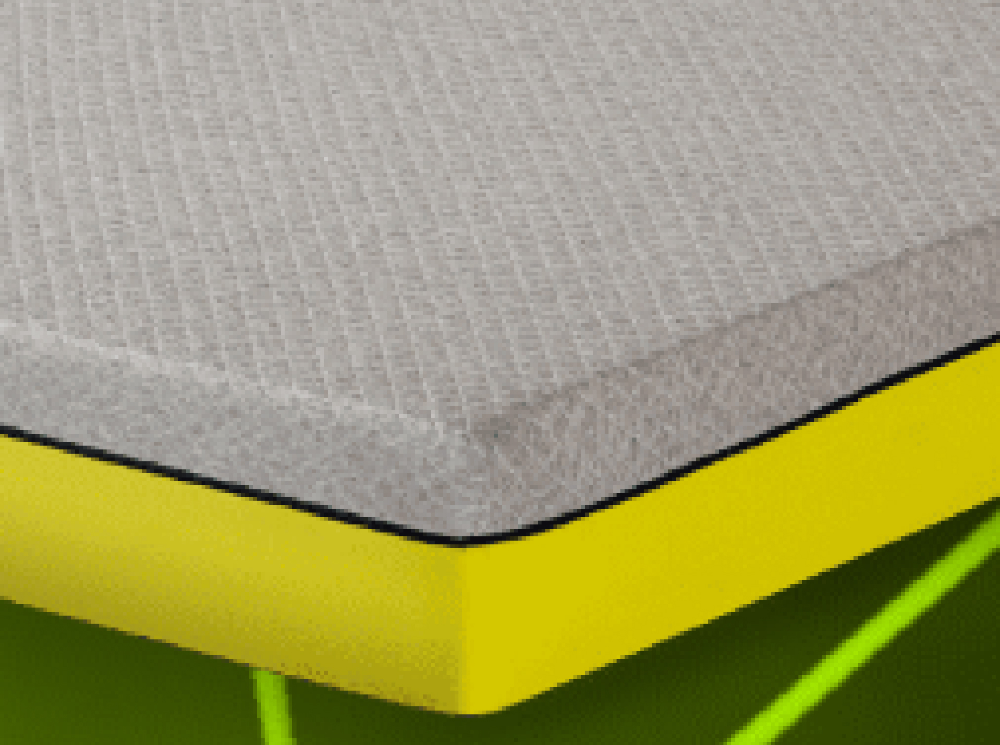 -
Пены в составе наших матрасов имеют высокую плотность и пористость. Чем выше плотность, тем дольше прослужит пена и в последствии матрас. Пористость позволяет матрасу дышать и выгонять из себя избыточное тепло. А так же придаёт спящему расслабление и полное погружение в сон.
 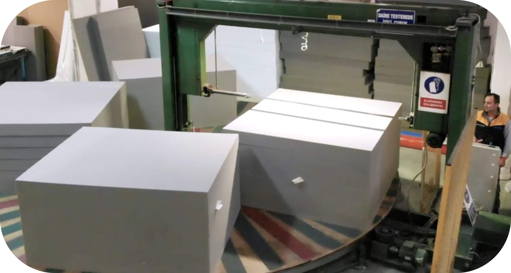
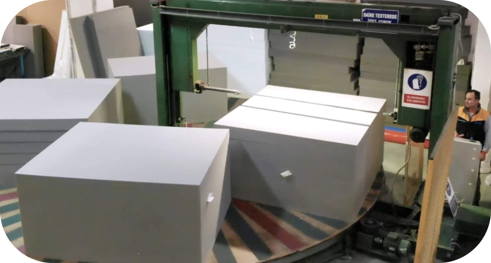
-
Пружинные блоки выполнены из высококачественного сплава, который делает метал прочным, но при это эластичным. Сечение пружин 1.8-2мм, в количестве 1000 пр./сп.место делают наши пружинные блоки не убиваемыми.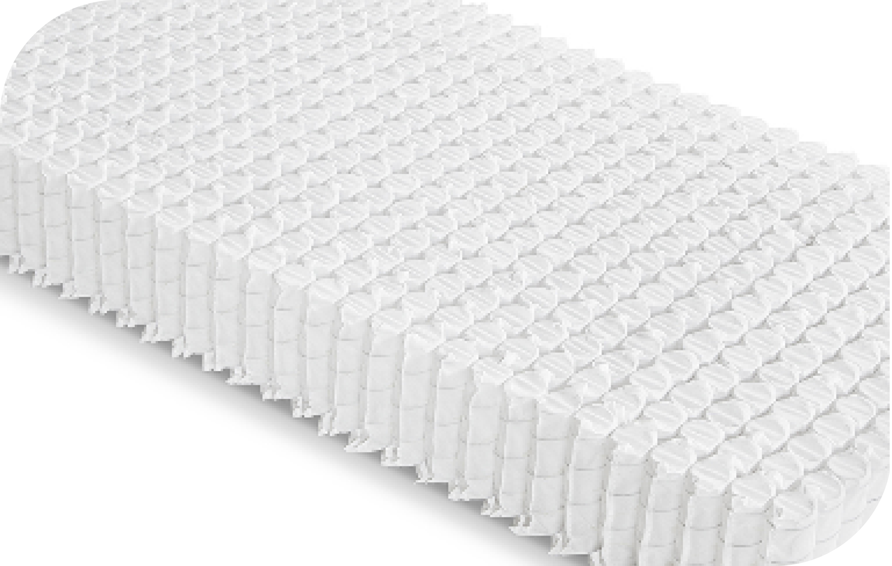 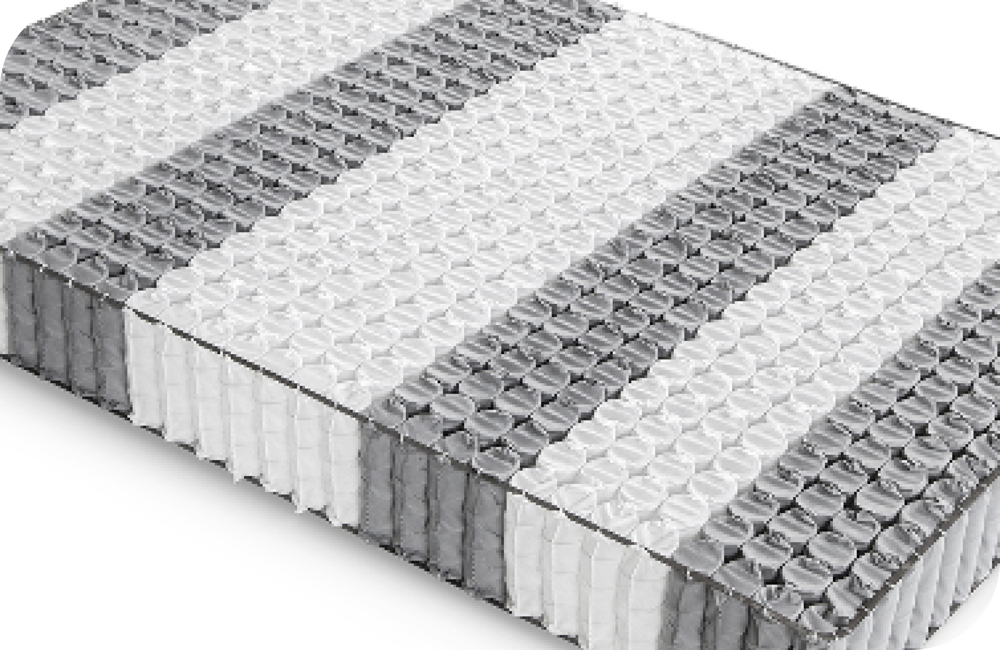 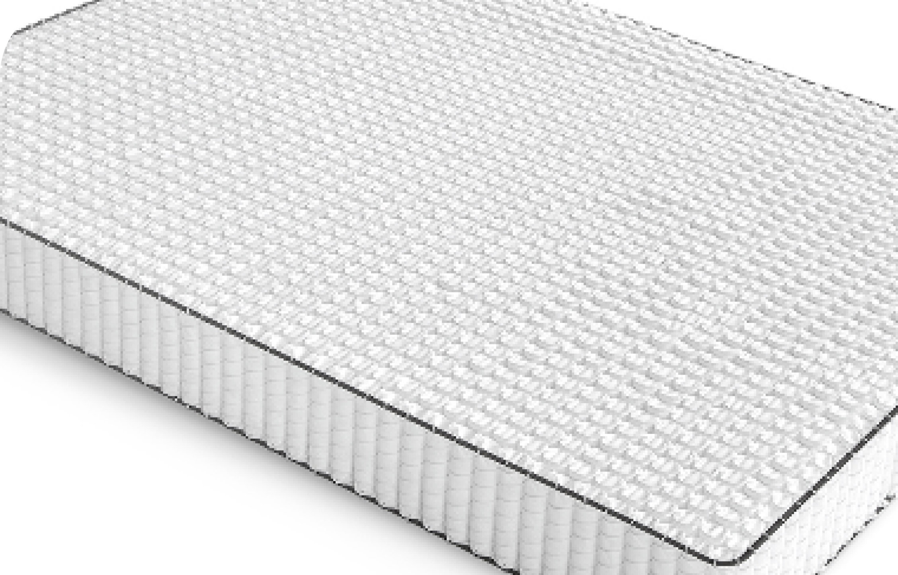
-
Технологичное производство. Фабрика BRN имеет помимо современного и высокотехнологичного производства еще лабораторию, в которой сырье и конечный продукт проходят различные тесты. Фундаментальная задача создать высококачественный, удобный, долговечный матрас, который оптимально подойдет любому человеку, не в зависимости от веса, предпочтений и заработка.
 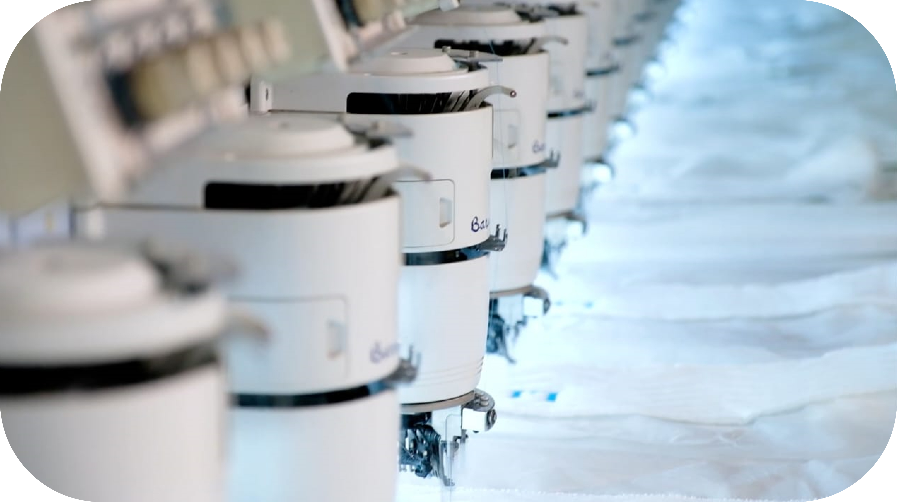
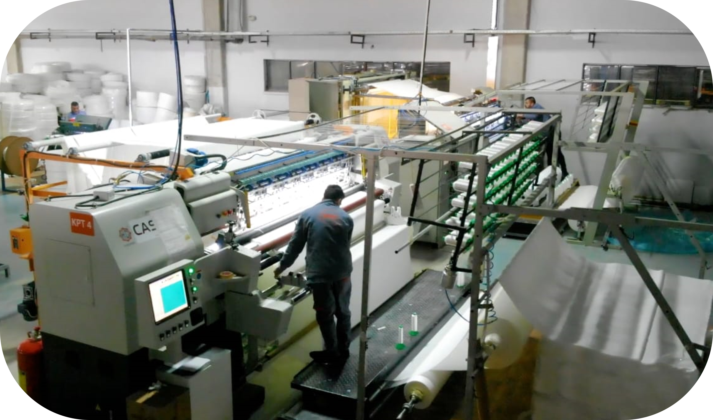
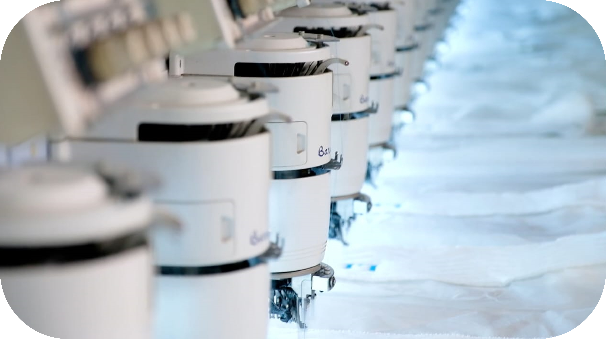
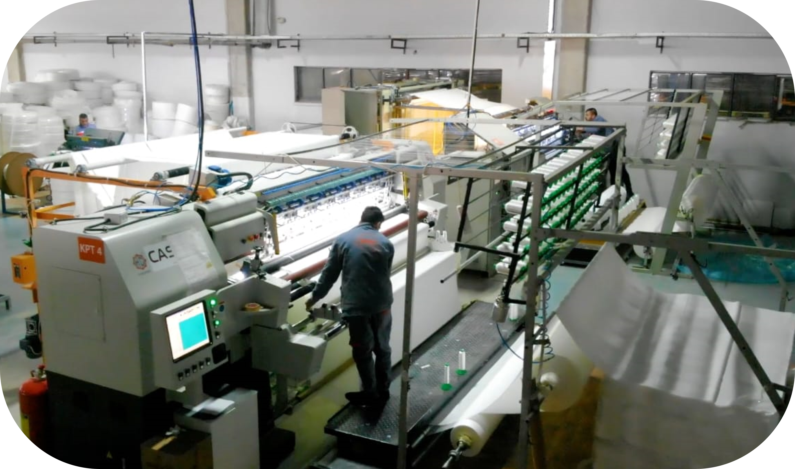